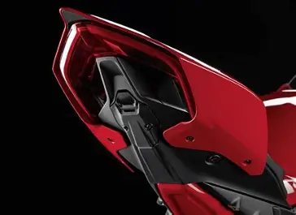
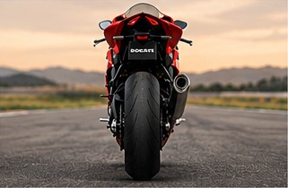

Supercar


Lamborghini Sian
3.000.000€Con un nome che deriva dal dialetto bolognese e significa fulmine, non sorprende che l'elettrificazione sia uno dei punti di forza della Sián. Monta una versione elaborata del V12 aspirato da 6,5 litri dell'Aventador SVJ, con l'aggiunta di 34 CV di potenza elettrica (grazie ai supercondensatori agli ioni di litio), per un totale di 808 CV. E sebbene questo incremento di potenza elettrica possa sembrare irrisorio, contribuisce ad ammorbidire i bruschi cambi di marcia che hanno afflitto le Lamborghini sin dall'Aventador.
Koenigsegg Jesko
4.800.000€Non sarebbe una classifica delle migliori supercar senza almeno una Koenigsegg, vero? E avevamo l'imbarazzo della scelta. Ma questa tocca le corde del cuore più di altre, non da ultimo perché Jesko è il nome del padre del fondatore Christian von Koenigsegg, che lo aiutò a creare l'azienda quando aveva solo 22 anni. Sotto la carrozzeria si cela un motore biturbo da 5 litri e una trasmissione a nove rapporti con doppia frizione appositamente progettata, con l'obiettivo di superare i 500 km/h. Il che, secondo CvK, dipenderà in definitiva dal luogo, dagli pneumatici e dal coraggio del pilota di spingerla al massimo.
Volkswagen Maggiolino
BMW S 1000 RR
€25.000Moto supersportiva con motore potente, design aerodinamico e tecnologia avanzata.
Kawasaki Ninja H2R
€58.000Moto da pista sovralimentata, famosa per le prestazioni estreme e il design aggressivo.
Honda CBR1000RR-R Fireblade
€30.000Moto supersportiva progettata per offrire precisione di guida, potenza e stabilità.



Ducati Panigale V4
€45.000Moto sportiva con motore V4, aerodinamica evoluta e ciclistica da pista.
Moto
BMW S 1000 RR
€25.000Moto supersportiva con motore potente, design aerodinamico e tecnologia avanzata.
Kawasaki Ninja H2R
€58.000Moto da pista sovralimentata, famosa per le prestazioni estreme e il design aggressivo.
Honda CBR1000RR-R Fireblade
€30.000Moto supersportiva progettata per offrire precisione di guida, potenza e stabilità.
Ducati Panigale V4
€45.000Moto sportiva con motore V4, aerodinamica evoluta e ciclistica da pista.